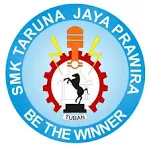
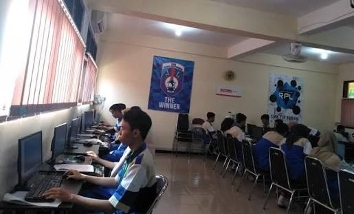

SMK Taruna Jaya Prawira (TJP) Tuban merupakan salah satu sekolah menengah kejuruan swasta terkemuka di Kabupaten Tuban, Jawa Timur, yang berkomitmen mencetak lulusan siap kerja di dunia industri. Berlokasi strategis di Jalan Dr. Wahidin Sudirohusodo, sekolah ini menawarkan berbagai program keahlian teknik unggulan, seperti Teknik Pemesinan dan Teknik Kendaraan Ringan Otomotif. Dengan dukungan fasilitas ruang kelas yang nyaman serta laboratorium praktik yang memadai, SMK TJP Tuban berhasil menciptakan lingkungan belajar yang kondusif untuk mengembangkan potensi akademik dan keterampilan teknis para siswanya.
Selain fokus pada kemampuan teknis, SMK TJP Tuban juga sangat menekankan pembentukan karakter, kedisiplinan, dan etika kerja yang kuat pada setiap peserta didiknya. Melalui program kemitraan yang erat dengan berbagai perusahaan dan dunia industri, sekolah ini memberikan peluang besar bagi para lulusannya untuk langsung terserap di pasar kerja atau melanjutkan ke jenjang pendidikan yang lebih tinggi. Berbagai kegiatan ekstrakurikuler juga disediakan sebagai wadah bagi siswa untuk mengasah bakat kepemimpinan, kerja sama tim, dan kreativitas di luar jam pelajaran formal.
Teknik Pemesinan: Mempelajari pengoperasian mesin produksi seperti CNC, bubut, dan frais, serta menjadi salah satu jurusan paling diminati karena mendukung kawasan industri.
Teknik Kendaraan Ringan Otomotif (TKRO): Mempelajari perawatan, perbaikan, dan servis mesin serta kelistrikan mobil atau kendaraan ringan lainnya.
Teknik Pengelasan: Mempelajari berbagai teknik penyambungan logam dan pengelasan industri seperti SMAW, GMAW, atau GTAW.
Teknik Instalasi Tenaga Listrik (TITL): Mempelajari instalasi, perbaikan, dan pemeliharaan instalasi tenaga listrik baik domestik maupun industri.
Rekayasa Perangkat Lunak (RPL): Mempelajari pengembangan perangkat lunak, pembuatan aplikasi, pemrograman, dan pengelolaan basis data.
Teknik Komputer dan Jaringan (TKJ): Mempelajari perakitan komputer, instalasi jaringan komputer, administrasi server, dan konfigurasi perangkat jaringan.
Sinkronisasi Kurikulum: Materi pembelajaran disesuaikan langsung dengan standar Dunia Usaha dan Dunia Industri (DUDI) agar lulusan tidak gagap teknologi saat masuk ke dunia kerja.
Kelas Industri: Beberapa jurusan seperti Teknik Pengelasan memiliki program Kelas Industri khusus yang bekerja sama dengan perusahaan manufaktur besar.
| No | Program Keahlian | Lama Belajar | ||
| 1 | Rekayasa Perangkat Lunak | 3 Tahun | ||
| 2 | Teknik Komputer Jaringan | 3 Tahun | ||
| 3 | Teknik Instalasi Listrik | 3 Tahun | ||
| 4 | Teknik Pengelasan | 3 Tahun | ||
| 5 | Teknik Kendaraan Ringan | 3 Tahun | ||
| 6 | Teknik Pemesinan | 3 Tahun | ||
Laboratorium Berstandar SMK TJP yang di setiap program keahliannya didukung oleh ruang praktik (bengkel/lab) mandiri yang dilengkapi dengan mesin dan perangkat lunak modern, seperti mesin CNC untuk pemesinan dan perangkat server untuk jaringan komputer.
Uji Kompetensi Resmi: Sekolah ini terafiliasi dengan Lembaga Sertifikasi Profesi (LSP), sehingga para siswa diuji langsung oleh instruktur bersertifikasi BNSP menjelang kelulusan.



Sekian dari website simpel saya tentang SMK TJP
-Zaidan Ahmad Syabil Al Ghifari-